В этом уроке мы узнаем, как разрабатывать графические пользовательские интерфейсы, с помощью разбора некоторых примеров графического интерфейса Python с использованием библиотеки Tkinter.
Библиотека Tkinter установлена в Python в качестве стандартного модуля, поэтому нам не нужно устанавливать что-либо для его использования. Tkinter — очень мощная библиотека.
Создание своего первого графического интерфейса
Для начала, следует импортировать Tkinter и создать окно, в котором мы зададим его название:
from tkinter import *
window = Tk()
window.title("Добро пожаловать в приложение PythonRu")
window.mainloop()
Результат будет выглядеть следующим образом:
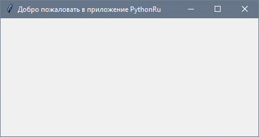Прекрасно! Наше приложение работает. Последняя строка вызывает функцию mainloop. Эта функция вызывает бесконечный цикл окна, поэтому окно будет ждать любого взаимодействия с пользователем, пока не будет закрыто.
В случае, если вы забудете вызвать функцию mainloop, для пользователя ничего не отобразится.
Создание виджета Label
Чтобы добавить текст в наш предыдущий пример, мы создадим lbl , с помощью класса Label, например:
lbl = Label(window, text="Привет")
Затем мы установим позицию в окне с помощью функции grid и укажем ее следующим образом:
lbl.grid(column=0, row=0)
Полный код, будет выглядеть следующим образом:
from tkinter import *
window = Tk()
window.title("Добро пожаловать в приложение PythonRu")
lbl = Label(window, text="Привет")
lbl.grid(column=0, row=0)
window.mainloop()
И вот как будет выглядеть результат:
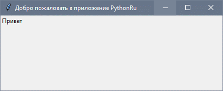Если функция grid не будет вызвана, текст не будет отображаться.
Настройка размера и шрифта текста
Вы можете задать шрифт текста и размер. Также можно изменить стиль шрифта. Для этого передайте параметр font таким образом:
lbl = Label(window, text="Привет", font=("Arial Bold", 50))
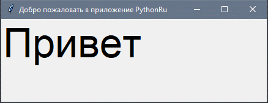Обратите внимание, что параметр font может быть передан любому виджету, для того, чтобы поменять его шрифт, он применяется не только к Label.
Отлично, но стандартное окно слишком мало. Как насчет настройки размера окна?
Настройка размеров окна приложения
Мы можем установить размер окна по умолчанию, используя функцию geometry следующим образом:
window.geometry('400x250')
В приведенной выше строке устанавливается окно шириной до 400 пикселей и высотой до 250 пикселей.
Попробуем добавить больше виджетов GUI, например, кнопки и посмотреть, как обрабатывается нажатие кнопок.
Добавление виджета Button
Начнем с добавления кнопки в окно. Кнопка создается и добавляется в окно так же, как и метка:
btn = Button(window, text="Не нажимать!")
btn.grid(column=1, row=0)
Наш код будет выглядеть вот так:
from tkinter import *
window = Tk()
window.title("Добро пожаловать в приложение PythonRu")
window.geometry('400x250')
lbl = Label(window, text="Привет", font=("Arial Bold", 50))
lbl.grid(column=0, row=0)
btn = Button(window, text="Не нажимать!")
btn.grid(column=1, row=0)
window.mainloop()
Результат будет следующим:
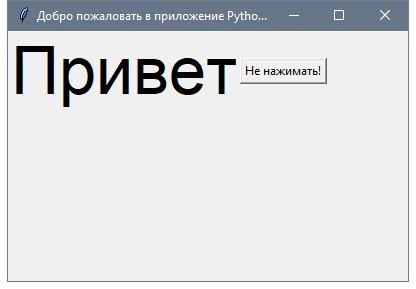Обратите внимание, что мы помещаем кнопку во второй столбец окна, что равно 1. Если вы забудете и поместите кнопку в том же столбце, который равен 0, он покажет только кнопку.
Изменение цвета текста и фона у Button
Вы можете поменять цвет текста кнопки или любого другого виджета, используя свойство fg.
Кроме того, вы можете поменять цвет фона любого виджета, используя свойство bg.
btn = Button(window, text="Не нажимать!", bg="black", fg="red")
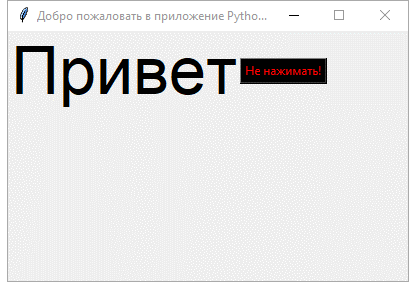Теперь, если вы попытаетесь щелкнуть по кнопке, ничего не произойдет, потому что событие нажатия кнопки еще не написано.
Кнопка Click
Для начала, мы запишем функцию, которую нужно выполнить при нажатии кнопки:
def clicked():
lbl.configure(text="Я же просил...")
Затем мы подключим ее с помощью кнопки, указав следующую функцию:
btn = Button(window, text="Не нажимать!", command=clicked)
Обратите внимание: мы пишем clicked, а не clicked()с круглыми скобками. Теперь полный код будет выглядеть так:
from tkinter import *
def clicked():
lbl.configure(text="Я же просил...")
window = Tk()
window.title("Добро пожаловать в приложение PythonRu")
window.geometry('400x250')
lbl = Label(window, text="Привет", font=("Arial Bold", 50))
lbl.grid(column=0, row=0)
btn = Button(window, text="Не нажимать!", command=clicked)
btn.grid(column=1, row=0)
window.mainloop()
При нажатии на кнопку, результат, как и ожидалось, будет выглядеть следующим образом:
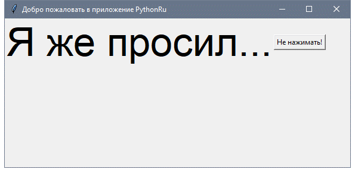Круто!
Получение ввода с использованием класса Entry (текстовое поле Trinter)
В предыдущих примерах GUI Python мы ознакомились со способами добавления простых виджетов, а теперь попробуем получить пользовательский ввод, используя класс Tkinter Entry (текстовое поле Tkinter).
Вы можете создать текстовое поле с помощью класса Tkinter Entry следующим образом:
txt = Entry(window, width=10)
Затем вы можете добавить его в окно, используя функцию grid.
Наше окно будет выглядеть так:
from tkinter import *
def clicked():
lbl.configure(text="Я же просил...")
window = Tk()
window.title("Добро пожаловать в приложение PythonRu")
window.geometry('400x250')
lbl = Label(window, text="Привет")
lbl.grid(column=0, row=0)
txt = Entry(window,width=10)
txt.grid(column=1, row=0)
btn = Button(window, text="Не нажимать!", command=clicked)
btn.grid(column=2, row=0)
window.mainloop()
Полученный результат будет выглядеть так:
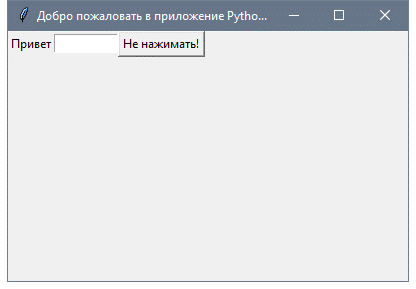Теперь, если вы нажмете кнопку, она покажет то же самое старое сообщение, но что же будет с отображением введенного текста в виджет Entry?
Во-первых, вы можете получить текст ввода, используя функцию get. Мы можем записать код для выбранной функции таким образом:
def clicked():
res = "Привет {}".format(txt.get())
lbl.configure(text=res)
Если вы нажмете на кнопку — появится текст «Привет » вместе с введенным текстом в виджете записи. Вот полный код:
from tkinter import *
def clicked():
res = "Привет {}".format(txt.get())
lbl.configure(text=res)
window = Tk()
window.title("Добро пожаловать в приложение PythonRu")
window.geometry('400x250')
lbl = Label(window, text="Привет")
lbl.grid(column=0, row=0)
txt = Entry(window,width=10)
txt.grid(column=1, row=0)
btn = Button(window, text="Клик!", command=clicked)
btn.grid(column=2, row=0)
window.mainloop()
Запустите вышеуказанный код и проверьте результат:
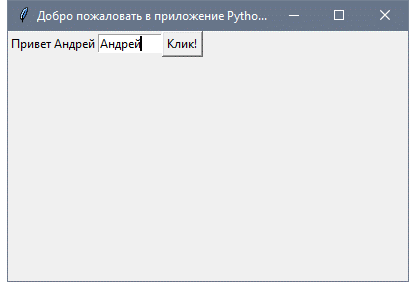Прекрасно!
Каждый раз, когда мы запускаем код, нам нужно нажать на виджет ввода, чтобы настроить фокус на ввод текста, но как насчет автоматической настройки фокуса?
Установка фокуса виджета ввода
Здесь все очень просто, ведь все, что нам нужно сделать, — это вызвать функцию focus:
txt.focus()
Когда вы запустите свой код, вы заметите, что виджет ввода в фокусе, который дает возможность сразу написать текст
Отключить виджет ввода
Чтобы отключить виджет ввода, отключите свойство состояния:
txt = Entry(window,width=10, state='disabled')
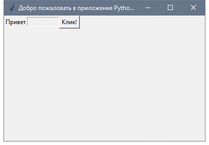Теперь вы не сможете ввести какой-либо текст.
Добавление виджета Combobox
Чтобы добавить виджет поля с выпадающем списком, используйте класс Combobox из ttk следующим образом:
from tkinter.ttk import Combobox
combo = Combobox(window)
Затем добавьте свои значения в поле со списком.
from tkinter import *
from tkinter.ttk import Combobox
window = Tk()
window.title("Добро пожаловать в приложение PythonRu")
window.geometry('400x250')
combo = Combobox(window)
combo['values'] = (1, 2, 3, 4, 5, "Текст")
combo.current(1) # установите вариант по умолчанию
combo.grid(column=0, row=0)
window.mainloop()
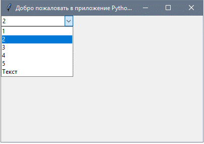Как видите с примера, мы добавляем элементы combobox, используя значения tuple.
Чтобы установить выбранный элемент, вы можете передать индекс нужного элемента текущей функции.
Чтобы получить элемент select, вы можете использовать функцию get вот таким образом:
combo.get()
Добавление виджета Checkbutton (чекбокса)
С целью создания виджета checkbutton, используйте класс Checkbutton:
from tkinter.ttk import Checkbutton
chk = Checkbutton(window, text='Выбрать')
Кроме того, вы можете задать значение по умолчанию, передав его в параметр var в Checkbutton:
from tkinter import *
from tkinter.ttk import Checkbutton
window = Tk()
window.title("Добро пожаловать в приложение PythonRu")
window.geometry('400x250')
chk_state = BooleanVar()
chk_state.set(True) # задайте проверку состояния чекбокса
chk = Checkbutton(window, text='Выбрать', var=chk_state)
chk.grid(column=0, row=0)
window.mainloop()
Посмотрите на результат:
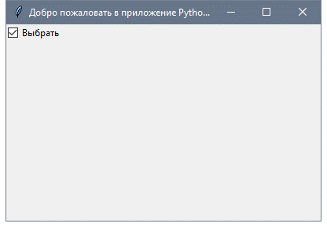Установка состояния Checkbutton
Здесь мы создаем переменную типа BooleanVar, которая не является стандартной переменной Python, это переменная Tkinter, затем передаем ее классу Checkbutton, чтобы установить состояние чекбокса как True в приведенном выше примере.
Вы можете установить для BooleanVar значение false, что бы чекбокс не был отмечен.
Так же, используйте IntVar вместо BooleanVar и установите значения 0 и 1.
chk_state = IntVar()
chk_state.set(0) # False
chk_state.set(1) # True
Эти примеры дают тот же результат, что и BooleanVar.
Добавление виджета Radio Button
Чтобы добавить radio кнопки, используйте класс RadioButton:
rad1 = Radiobutton(window,text='Первый', value=1)
Обратите внимание, что вы должны установить value для каждой radio кнопки с уникальным значением, иначе они не будут работать.
from tkinter import *
from tkinter.ttk import Radiobutton
window = Tk()
window.title("Добро пожаловать в приложение PythonRu")
window.geometry('400x250')
rad1 = Radiobutton(window, text='Первый', value=1)
rad2 = Radiobutton(window, text='Второй', value=2)
rad3 = Radiobutton(window, text='Третий', value=3)
rad1.grid(column=0, row=0)
rad2.grid(column=1, row=0)
rad3.grid(column=2, row=0)
window.mainloop()
Результатом вышеприведенного кода будет следующий:
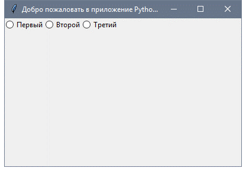Кроме того, вы можете задать command любой из этих кнопок для определенной функции. Если пользователь нажимает на такую кнопку, она запустит код функции.
Вот пример:
rad1 = Radiobutton(window,text='Первая', value=1, command=clicked)
def clicked():
# Делайте, что нужно
Достаточно легко!
Получение значения Radio Buton (Избранная Radio Button)
Чтобы получить текущую выбранную radio кнопку или ее значение, вы можете передать параметр переменной и получить его значение.
from tkinter import *
from tkinter.ttk import Radiobutton
def clicked():
lbl.configure(text=selected.get())
window = Tk()
window.title("Добро пожаловать в приложение PythonRu")
window.geometry('400x250')
selected = IntVar()
rad1 = Radiobutton(window,text='Первый', value=1, variable=selected)
rad2 = Radiobutton(window,text='Второй', value=2, variable=selected)
rad3 = Radiobutton(window,text='Третий', value=3, variable=selected)
btn = Button(window, text="Клик", command=clicked)
lbl = Label(window)
rad1.grid(column=0, row=0)
rad2.grid(column=1, row=0)
rad3.grid(column=2, row=0)
btn.grid(column=3, row=0)
lbl.grid(column=0, row=1)
window.mainloop()
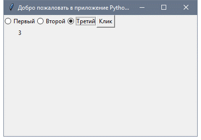Каждый раз, когда вы выбираете radio button, значение переменной будет изменено на значение кнопки.
Добавление виджета ScrolledText (текстовая область Trinter)
Чтобы добавить виджет ScrolledText, используйте класс ScrolledText:
from tkinter import scrolledtext
txt = scrolledtext.ScrolledText(window,width=40,height=10)
Здесь нужно указать ширину и высоту ScrolledText, иначе он заполнит все окно.
from tkinter import *
from tkinter import scrolledtext
window = Tk()
window.title("Добро пожаловать в приложение PythonRu")
window.geometry('400x250')
txt = scrolledtext.ScrolledText(window, width=40, height=10)
txt.grid(column=0, row=0)
window.mainloop()
Результат:
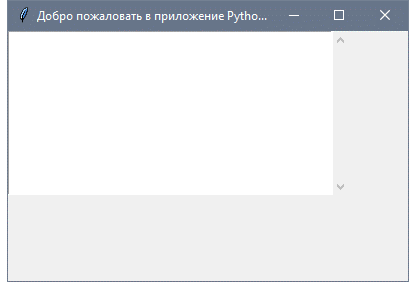Настройка содержимого Scrolledtext
Используйте метод insert, чтобы настроить содержимое Scrolledtext:
txt.insert(INSERT, 'Текстовое поле')
Удаление/Очистка содержимого Scrillestext
Чтобы очистить содержимое данного виджета, используйте метод delete:
txt.delete(1.0, END) # мы передали координаты очистки
Отлично!
Создание всплывающего окна с сообщением
Чтобы показать всплывающее окно с помощью Tkinter, используйте messagebox следующим образом:
from tkinter import messagebox
messagebox.showinfo('Заголовок', 'Текст')
Довольно легко! Давайте покажем окно сообщений при нажатии на кнопку пользователем.
from tkinter import *
from tkinter import messagebox
def clicked():
messagebox.showinfo('Заголовок', 'Текст')
window = Tk()
window.title("Добро пожаловать в приложение PythonRu")
window.geometry('400x250')
btn = Button(window, text='Клик', command=clicked)
btn.grid(column=0, row=0)
window.mainloop()
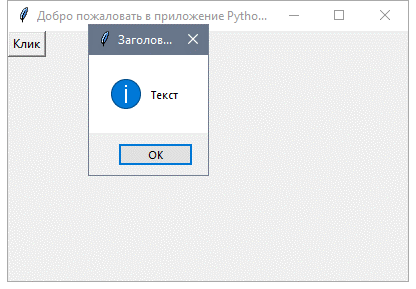Когда вы нажмете на кнопку, появится информационное окно.
Показ сообщений о предупреждениях и ошибках
Вы можете показать предупреждающее сообщение или сообщение об ошибке таким же образом. Единственное, что нужно изменить—это функция сообщения.
messagebox.showwarning('Заголовок', 'Текст') # показывает предупреждающее сообщение
messagebox.showerror('Заголовок', 'Текст') # показывает сообщение об ошибке
Показ диалоговых окон с выбором варианта
Чтобы показать пользователю сообщение “да/нет”, вы можете использовать одну из следующих функций messagebox:
from tkinter import messagebox
res = messagebox.askquestion('Заголовок', 'Текст')
res = messagebox.askyesno('Заголовок', 'Текст')
res = messagebox.askyesnocancel('Заголовок', 'Текст')
res = messagebox.askokcancel('Заголовок', 'Текст')
res = messagebox.askretrycancel('Заголовок', 'Текст')
Вы можете выбрать соответствующий стиль сообщения согласно вашим потребностям. Просто замените строку функции showinfo на одну из предыдущих и запустите скрипт. Кроме того, можно проверить, какая кнопка нажата, используя переменную результата.
Если вы кликнете OK, yes или retry, значение станет True, а если выберете no или cancel, значение будет False.
Единственной функцией, которая возвращает одно из трех значений, является функция askyesnocancel; она возвращает True/False/None.
Добавление SpinBox (Виджет спинбокс)
Для создания виджета спинбокса, используйте класс Spinbox:
spin = Spinbox(window, from_=0, to=100)
Таким образом, мы создаем виджет Spinbox, и передаем параметры from и to, чтобы указать диапазон номеров.
Кроме того, вы можете указать ширину виджета с помощью параметра width:
spin = Spinbox(window, from_=0, to=100, width=5)
Проверим пример полностью:
from tkinter import *
window = Tk()
window.title("Добро пожаловать в приложение PythonRu")
window.geometry('400x250')
spin = Spinbox(window, from_=0, to=100, width=5)
spin.grid(column=0, row=0)
window.mainloop()
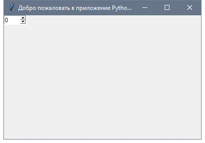Вы можете указать числа для Spinbox, вместо использования всего диапазона следующим образом:
spin = Spinbox(window, values=(3, 8, 11), width=5)
Виджет покажет только эти 3 числа: 3, 8 и 11.
Задать значение по умолчанию для Spinbox
В случае, если вам нужно задать значение по умолчанию для Spinbox, вы можете передать значение параметру textvariable следующим образом:
var = IntVar()
var.set(36)
spin = Spinbox(window, from_=0, to=100, width=5, textvariable=var)
Теперь, если вы запустите программу, она покажет 36 как значение по умолчанию для Spinbox.
Добавление виджета Progressbar
Чтобы создать данный виджет, используйте класс progressbar :
from tkinter.ttk import Progressbar
bar = Progressbar(window, length=200)
Установите значение progressbar таким образом:
bar['value'] = 70
Вы можете установить это значение на основе любого процесса или при выполнении задачи.
Изменение цвета Progressbar
Изменение цвета Progressbar немного сложно. Сначала нужно создать стиль и задать цвет фона, а затем настроить созданный стиль на Progressbar. Посмотрите следующий пример:
from tkinter import *
from tkinter.ttk import Progressbar
from tkinter import ttk
window = Tk()
window.title("Добро пожаловать в приложение PythonRu")
window.geometry('400x250')
style = ttk.Style()
style.theme_use('default')
style.configure("black.Horizontal.TProgressbar", background='black')
bar = Progressbar(window, length=200, style='black.Horizontal.TProgressbar')
bar['value'] = 70
bar.grid(column=0, row=0)
window.mainloop()
И в результате вы получите следующее:
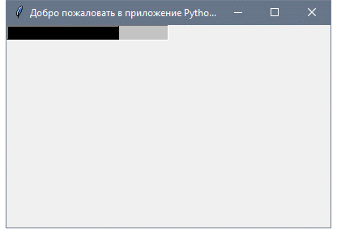Добавление поля загрузки файла
Для добавления поля с файлом, используйте класс filedialog:
from tkinter import filedialog
file = filedialog.askopenfilename()
После того, как вы выберете файл, нажмите “Открыть”; переменная файла будет содержать этот путь к файлу. Кроме того, вы можете запросить несколько файлов:
files = filedialog.askopenfilenames()
Указание типа файлов (расширение фильтра файлов)
Возможность указания типа файлов доступна при использовании параметра filetypes, однако при этом важно указать расширение в tuples.
file = filedialog.askopenfilename(filetypes = (("Text files","*.txt"),("all files","*.*")))
Вы можете запросить каталог, используя метод askdirectory :
dir = filedialog.askdirectory()
Вы можете указать начальную директорию для диалогового окна файла, указав initialdir следующим образом:
from os import path
file = filedialog.askopenfilename(initialdir= path.dirname(__file__))
Легко!
Добавление панели меню
Для добавления панели меню, используйте класс menu:
from tkinter import Menu
menu = Menu(window)
menu.add_command(label='Файл')
window.config(menu=menu)
Сначала мы создаем меню, затем добавляем наш первый пункт подменю. Вы можете добавлять пункты меню в любое меню с помощью функции add_cascade() таким образом:
menu.add_cascade(label='Автор', menu=new_item)
Наш код будет выглядеть так:
from tkinter import *
from tkinter import Menu
window = Tk()
window.title("Добро пожаловать в приложение PythonRu")
window.geometry('400x250')
menu = Menu(window)
new_item = Menu(menu)
new_item.add_command(label='Новый')
menu.add_cascade(label='Файл', menu=new_item)
window.config(menu=menu)
window.mainloop()

Таким образом, вы можете добавить столько пунктов меню, сколько захотите.
from tkinter import *
window = Tk()
window.title("Добро пожаловать в приложение PythonRu")
window.geometry('400x250')
menu = Menu(window)
new_item = Menu(menu)
new_item.add_command(label='Новый')
new_item.add_separator()
new_item.add_command(label='Изменить')
menu.add_cascade(label='Файл', menu=new_item)
window.config(menu=menu)
window.mainloop()
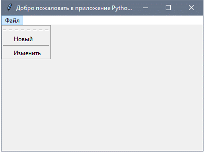Теперь мы добавляем еще один пункт меню “Изменить” с разделителем меню. Вы можете заметить пунктирную линию в начале, если вы нажмете на эту строку, она отобразит пункты меню в небольшом отдельном окне.
Можно отключить эту функцию, с помощью tearoff подобным образом:
new_item = Menu(menu, tearoff=0)
Просто отредактируйте new_item, как в приведенном выше примере и он больше не будет отображать пунктирную линию.
Вы так же можете ввести любой код, который работает, при нажатии пользователем на любой элемент меню, задавая свойство команды.
new_item.add_command(label='Новый', command=clicked)
Добавление виджета Notebook (Управление вкладкой)
Для удобного управления вкладками реализуйте следующее:
· Для начала, создается элемент управления вкладкой, с помощью класса Notebook .
· Создайте вкладку, используя класс Frame.
· Добавьте эту вкладку в элемент управления вкладками.
· Запакуйте элемент управления вкладкой, чтобы он стал видимым в окне.
from tkinter import *
from tkinter import ttk
window = Tk()
window.title("Добро пожаловать в приложение PythonRu")
window.geometry('400x250')
tab_control = ttk.Notebook(window)
tab1 = ttk.Frame(tab_control)
tab_control.add(tab1, text='Первая')
tab_control.pack(expand=1, fill='both')
window.mainloop()
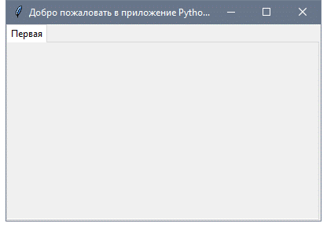Таким образом, вы можете добавлять столько вкладок, сколько нужно.
Добавление виджетов на вкладку
После создания вкладок вы можете поместить виджеты внутри этих вкладок, назначив родительское свойство нужной вкладке.
from tkinter import *
from tkinter import ttk
window = Tk()
window.title("Добро пожаловать в приложение PythonRu")
window.geometry('400x250')
tab_control = ttk.Notebook(window)
tab1 = ttk.Frame(tab_control)
tab2 = ttk.Frame(tab_control)
tab_control.add(tab1, text='Первая')
tab_control.add(tab2, text='Вторая')
lbl1 = Label(tab1, text='Вкладка 1')
lbl1.grid(column=0, row=0)
lbl2 = Label(tab2, text='Вкладка 2')
lbl2.grid(column=0, row=0)
tab_control.pack(expand=1, fill='both')
window.mainloop()
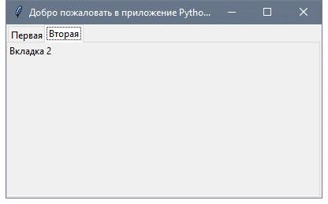Добавление интервала для виджетов (Заполнение)
Вы можете добавить отступы для элементов управления, чтобы они выглядели хорошо организованными с использованием свойств padx иpady.
Передайте padx и pady любому виджету и задайте значение.
lbl1 = Label(tab1, text= 'label1', padx=5, pady=5)
Это очень просто!
Задания:
1. Сделать форму заявки:
Форма заявки: Результат:
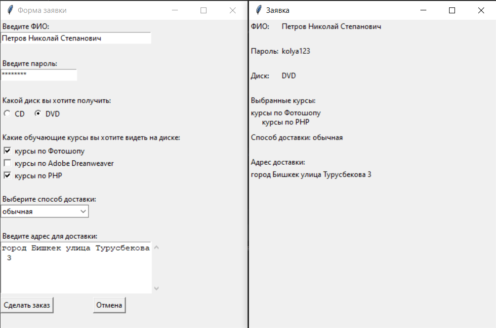2. Сделать калькулятор:
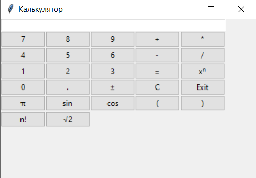3. Сделать текстовый редактор:
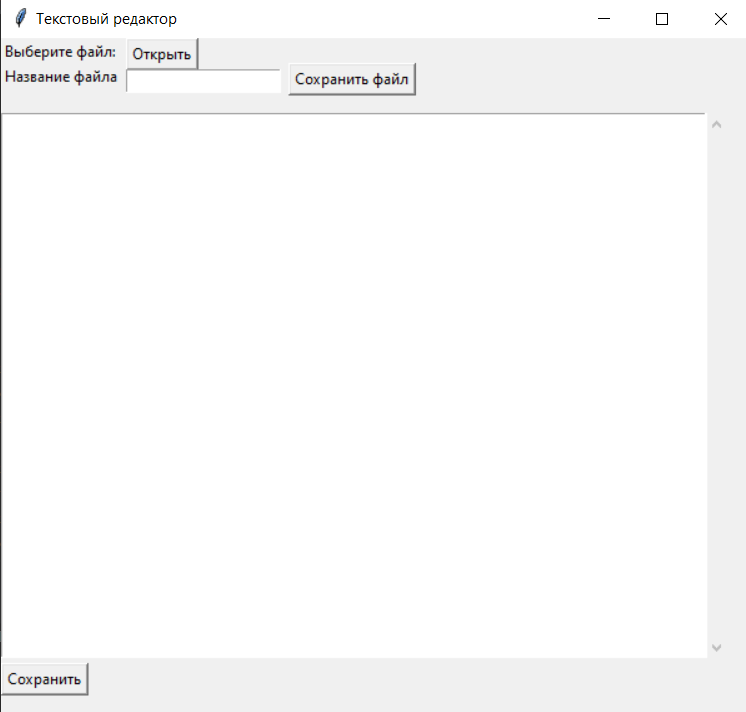